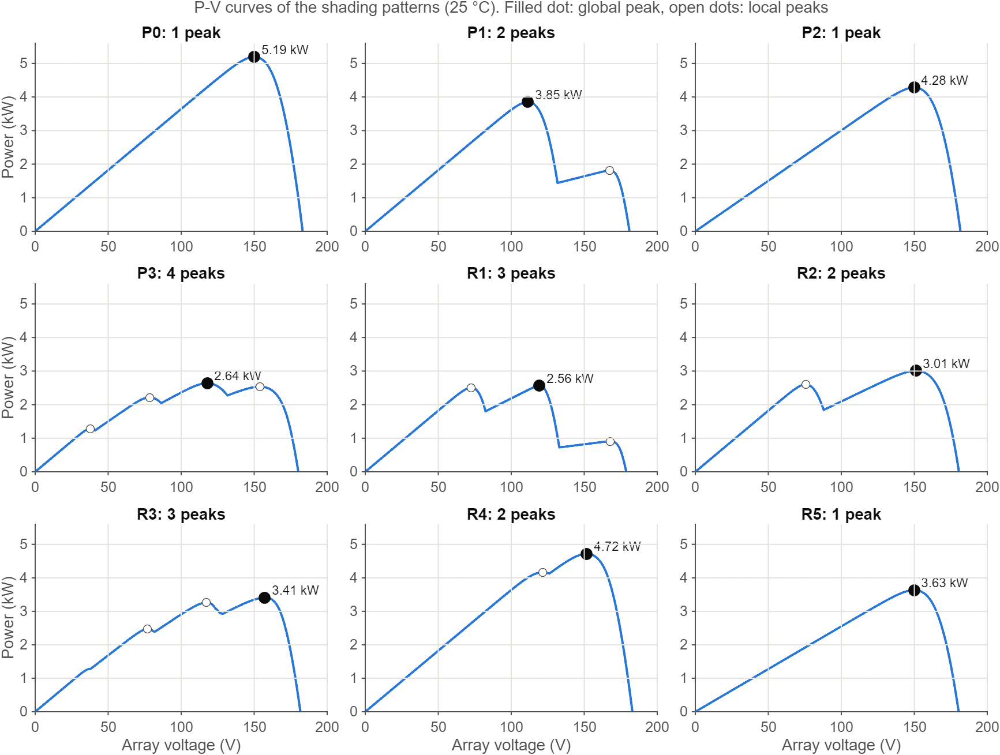
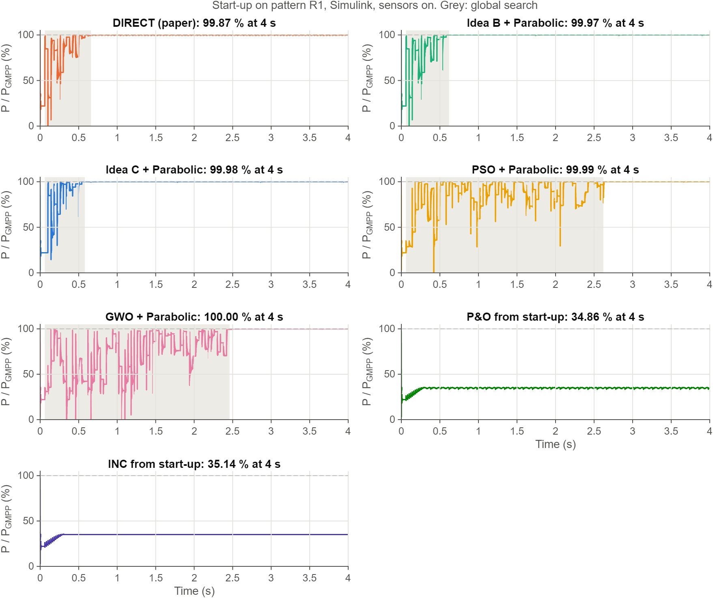

The search problem and the theory behind Idea C
Idea C is the main global search of this project. This part builds the theory that Idea C rests on, one step at a time: the search problem, what samples can and cannot prove, the Lipschitz bound, the Piyavskii-Shubert search and the DIRECT baseline. Each step ends with what it means for Idea C. Part 2 gives Idea C itself. Part 3 gives a worked example and the final results of 24 November 2026.
1Partial shading gives several power peaks
Each panel has bypass diodes. Under partial shading, the diodes across the shaded cells conduct, and the I-V curve of the array falls in steps. The P-V curve then has one peak for each step. Only the highest peak is the global maximum power point (GMPP).
A local tracker, such as perturb and observe (P&O) or incremental conductance (INC), climbs the nearest peak and stays there. On pattern R1, P&O reaches 34.9 % and INC 35.1 % of the GMPP power after 4 s. Idea C reaches 99.98 %.

Figure 1. The nine shading patterns of the project at 25 °C. Filled dot: GMPP. Open dots: local peaks. Six patterns have two to four peaks.

Figure 2. Start-up on pattern R1 in Simulink, with sensor noise. Grey band: global search. P&O and INC stop on a local peak near 35 % of the GMPP power. Every global search reaches the GMPP.
2Global MPPT is a black-box search
The tracker sets one variable, the duty \(D\) of the converter, and must find the duty of the GMPP. Four properties define the problem:
- Black box. The tracker can measure the power \(P(D)\) at any duty, but it has no formula for \(P(D)\) and no derivative. The curve changes with irradiance, temperature and shading.
- Expensive evaluation. Each measurement is one test of 40 ms, and during the test the array runs below its peak. The cost of a search is therefore the number of tests, not the arithmetic between them.
- Multimodal. \(P(D)\) has one peak for each current step (section 1).
- Bounded range. The duty lies in \([D_{lo},D_{hi}]=[0.30,0.78]\). A search can work on the normalized variable \(z=(D-D_{lo})/(D_{hi}-D_{lo})\in[0,1]\). This map keeps the order of the points and the location of the peak.
P&O and INC estimate the slope \(dP/dV\) from two consecutive measurements. They are local finite-difference methods, so they climb the nearest peak. A global search uses only measured values, and it must decide which peak to climb. Idea C adds one more piece of information: the measured current, which the physics of the array makes monotone (part 2, section 1).
The project compares trackers by their tracking efficiency:
- \(P\) is the power that the tracker takes from the array, and \(P_{\mathrm{GMPP}}\) is the power at the GMPP at each instant,
- the integrals run over the whole test profile: a start-up, a ramp, a cloud event or a full day.
A tracker loses energy in two ways: during the search, when it tests duties far from the peak, and after a wrong decision, when it holds a local peak. The ratio \(\eta\) counts both losses in one unit. The EN 50530 standard uses the same ratio for the dynamic MPPT efficiency of inverters [8].
A good global search makes few tests, and it ends on the right peak. Idea C gets both from one bound: the bound decides where to test next and when to stop. Over four full days, all the searches of Idea C cost 0.016 % of the energy.
Figure 3. The test curve of the theory figures: \(P(v)=v\,I(v)\) on the normalized voltage \(v\in[0,1]\). The current \(I(v)\) falls in three steps, as in a string with three bypass groups, so the power has three peaks. The global peak is the left one. A search sees only the points that it tests.
3What finitely many tests can prove
If the only assumption is that \(P\) is continuous, no finite set of tests can prove where the global peak is. The proof is a construction. Assume that a deterministic search finds the global maximum of every continuous function without testing everywhere densely. Then, for some function \(P\), there is an interval that the search never tests. Build \(\tilde P\) equal to \(P\) outside this interval, with a narrow spike inside that is higher than every tested value. \(\tilde P\) is continuous. The search sees identical values, makes identical tests, and misses the spike.
Figure 4. The solid and the dashed functions agree at every test. Only the dashed function has a higher peak, inside the untested interval. No search can tell them apart from these data.
- The spike exists only on paper. The search never sees \(\tilde P\). It sees only its own tests, and these give the same values for \(P\) and \(\tilde P\).
- No finite spacing is enough under continuity alone, because a spike can be as narrow as one likes. A search can only promise the global peak "in the limit", when its tests become dense everywhere.
- With a bound on the slope, a finite spacing is enough. If \(P\) cannot change faster than \(K\) per unit of \(v\), tests at spacing \(\Delta\) leave every point within \(\Delta/2\) of a test, so
- \(P^*\) is the global maximum and \(P_{\mathrm{best}}\) the best tested value,
- \(\tau\) is the largest error that the search accepts.
This is the sampling problem of signal processing. Samples say nothing about a signal between them unless a bandlimit is assumed, and the Nyquist-Shannon theorem works only because it assumes one. The slope bound \(K\) plays the role of the bandlimit. Idea C needs an assumption too. It uses one that every PV array satisfies by its physics: the current never rises when the voltage rises.
4The Lipschitz bound and the searches built on it
4.1 One test bounds a whole region
A function is Lipschitz continuous with constant \(K\) if
- \(K\gt0\) is the largest rate at which \(P\) can change, in power per unit of \(x\),
- for a differentiable \(P\), the smallest valid \(K\) is the largest value of \(|P'(x)|\).
The bound works like the slew rate of an amplifier: an output that cannot change faster than SR is known within \(\pm\text{SR}\,\Delta t\) for the next \(\Delta t\) after one sample. Through a test point, draw two lines with slopes \(+K\) and \(-K\). The curve must stay in the left and right wedges between them, so the upper wedge is forbidden. One test at \(x_0\) therefore gives a ceiling on the whole axis: \(P(x)\le P(x_0)+K\,|x-x_0|\). For a P-V curve, \(K\) is the steepest slope, on the falling side of a knee where a bypass diode turns on. It is finite, but it changes with shading and temperature and is not known in advance.
Figure 5. The Lipschitz hourglass. Drag across the plot, or use the slider, to move the test point. The left and right wedges are allowed. The upper and lower wedges are forbidden. Where the curve enters a forbidden wedge, it turns magenta: the chosen \(K\) is below the true Lipschitz constant, and the ceiling is false there. With the box option on, the amber V shows the ceiling \(P(c)+K\,d\) of a box centred at the test point.
4.2 Box ceilings, and why only a few boxes can win
A box (an interval) with its centre \(c_i\) tested and half-width \(d_i\) has the ceiling \(P(c_i)+K\,d_i\). The two terms are the two goals of every global search. \(P(c_i)\) is high when the centre is good, which favours exploitation. \(K\,d_i\) is large for a large box, which favours exploration of untested ground. \(K\) sets the weight between them.
One \(K\) applies to every box at once. Boxes of the same size add the same \(K\,d\), so in each size group the box with the best centre has the highest ceiling for every \(K\). The other boxes of the group are dominated: no \(K\) can make them win. At most one box per size can win, and each wins over its own range of \(K\). The switch point between two candidates \(a\) (larger) and \(b\) (smaller) is
Below this \(K\) box \(b\) has the higher ceiling, and above it box \(a\). A dominated box is not discarded. It waits in the queue, and it can win once the best box of its size has been split. Keeping every box is what lets DIRECT promise the global peak in the limit (section 7).
Figure 6. The boxes after three DIRECT iterations on the test curve. Each dot is a centre value \(P(c_i)\). Each V rises with slope \(K\) from the box centre, and its tips give the ceiling \(P(c_i)+K\,d_i\) (dashed). The highlighted box has the highest ceiling at this \(K\). A small \(K\) picks the best centre, and a large \(K\) picks the largest box. The table groups the boxes by size and gives the range of \(K\) over which each box wins. Sweep K moves \(K\) from 0 to 1.2, pauses at each switch point, and ticks every box that wins on the way. DIRECT selects exactly this set (section 5).
4.3 The Piyavskii-Shubert search
With a known \(K\), every test gives a ceiling cone, and the cones together give one curve that \(P\) never exceeds, the upper envelope:
- \(x_i\) are the tested points, and \(P(x_i)\) their measured powers,
- each cone is a true statement ("\(P\) is at most this much here"). Where several cones cover one point, the lowest one is the strongest statement, so the envelope takes the minimum.
Between two neighbouring tests \(a\) and \(b\), the rising cone of \(a\) meets the falling cone of \(b\). There the envelope forms a tooth, with its tip at
- \(\hat U\) is the highest power that the gap between \(a\) and \(b\) can hide, and \(\hat x\) is where it could be.
The search of Piyavskii [3] and Shubert [4] repeats four steps:
- Test both ends of the range.
- Calculate the tooth tip \((\hat x,\hat U)\) of every gap.
- Test at the highest tip. The test either finds a high power, or it pulls the envelope down at that place.
- Stop when the highest tip is not above \((1+\varepsilon)\,P_{\mathrm{best}}\). The stop comes with a proof: \(P^*\le\hat U_{\max}\).
This is best-first search: always test where the bound is highest, and stop when no bound beats the best. Idea C has the same loop. It replaces the cone \(P(x_i)+K|x-x_i|\) by the measured ceiling of part 2, which needs no \(K\).
Figure 7. The Piyavskii-Shubert search on the test curve, with \(\varepsilon=0.02\). Dashed line: the upper envelope \(U(x)\). Small marks: the tooth tips. The highest tip, which the next step tests. Tests, numbered in order. Press Step to see each test pull the envelope down. Lower \(K\) below the true constant (about 5.9) and the curve rises above the envelope (magenta): the bound is then false, and the search can stop on the wrong peak.
4.4 The envelope, the box ceiling, and the certificate
DIRECT uses a cheaper and looser ceiling than the envelope. Inside each box it uses only the cone of the box's own centre, \(P(c_i)+K|x-c_i|\). This ceiling jumps at every box boundary. DIRECT accepts the looser ceiling because it needs only one score per box, the top of its V, \(P(c_i)+K\,d_i\). Figure 8 shows both ceilings on the same tests. Choose one at a time to see each alone.
Figure 8. The tests are the box centres of Figure 6. Box-wise ceiling: the V of each box, from its own centre only. The jumps of the box-wise ceiling at the box boundaries, where it gives no bound. Upper envelope (dashed): the minimum of all cones. Both ceilings are valid for a valid \(K\), but the envelope is tighter, because it uses every test. Magenta marks points where the curve rises above a shown ceiling.
The searches of this section are forms of branch-and-bound: split the range into cells, bound each cell, refine the cell with the highest bound, and drop for good every cell whose bound is below the best value found. It is like a search of a building for its highest point, where each room carries a sign that says "nothing in here is higher than X". You open the room with the highest sign first, and you lock every room whose sign is below the best height already found. With a valid bound, the true maximum is always trapped between two known numbers:
- the difference of the outer terms is the optimality gap. A proven gap is a certificate: a bound on what the search can have missed.
4.5 The catch: K is not known
- A \(K\) that is too small gives a false bound (magenta in Figures 5 to 8), and the search can stop on the wrong peak with a false certificate.
- A \(K\) that is too large gives a true but loose bound, and the search makes many tests.
- The LIPO tracker uses Piyavskii-Shubert in duty with \(k=1500\), a value tuned in simulation for one plant [10].
There are two ways out. DIRECT accepts every \(K\) at once (section 5), so it can never drop a region and never prove a stop. Idea C measures its bound instead of assuming one: two tests and the monotone current give a ceiling that is true without any \(K\) (part 2, section 1). It keeps the best-first loop and the certificate of Piyavskii-Shubert.
5DIRECT: how the baseline works
Sources: the DIRECT method of Jones, Perttunen and Stuckman [1], reviewed by Jones and Martins [2], in the MPPT form of Nguyen and Low [5].
- First samples at the centre of the duty range and at one sixth of the range from each end.
- Shading test (Eqs. (19) and (20) of [5]) on these three samples: uniform light or partial shading.
- Global stage. Divide the largest potentially optimal interval into three equal parts, and sample the centres of the two outer parts. Skip rules remove some samples near the ends of the range.
- Local stage. Divide the interval of the best sample until its length is 0.0025 or less.
- Hand-over to the local tracker at the duty of the best sample.
An interval \(j\) is potentially optimal if a constant \(K\gt0\) exists such that
- \(P_j\) is the power at the centre of interval \(j\), and \(d_j\) is half its length,
- \(P_{\max}\) is the best power so far, and \(\varepsilon=0.03\) in [5].
The first condition says that interval \(j\) has the highest box ceiling for some \(K\): it is one of the boxes that the sweep of Figure 6 ticks. For a large \(K\), the widest interval always qualifies, so DIRECT never discards a region. On this plant, DIRECT takes 11 to 15 tests on the nine patterns, and it stops on a fixed budget.
6Idea C on the test curve
Figure 9 runs Idea C on the test curve of Figure 3, in normalized voltage. It tests both ends and the middle. Then it tests the corner of the open gap with the highest measured ceiling, \(v_{\mathrm{high}}\,I(v_{\mathrm{low}})\): the higher voltage of the two tests times the higher current. It stops when no gap is open. Compare it with Figure 7: the loop is the same as Piyavskii-Shubert, with no \(K\).
Figure 9. Idea C with \(\varepsilon_c=0.02\) and a smallest gap of 0.02. Each horizontal bar is the measured ceiling of one gap: open and highest (tested next), open, closed by the ceiling, narrower than the smallest gap. Dashed line: the open limit \(1.02\,P_{\mathrm{best}}\). The strip under the plot shows the gaps. The search sees only the numbered tests.
The table compares the searches on this curve. The page calculates it from the same code as the figures. It counts tests, because each test costs one settling period.
- Idea C knows when it is done. It stops with a certificate after a few tests and hands over to the local stage.
- DIRECT does not know. It finds the peak, but it keeps splitting boxes all over the axis, because it has no certificate. A real controller must stop it on a budget.
- Piyavskii-Shubert also stops with a certificate, but only with a valid \(K\), which a tracker does not know in advance. Even with a valid \(K\) it needs many more tests here. A valid \(K\) must cover the steepest knee, so the cones are loose everywhere else. The measured ceiling of Idea C is tight wherever the current is flat.
7DIRECT seen from Idea C: strengths and weaknesses
Jones and Martins list the strengths and the weaknesses of DIRECT, with evidence [2]. The table sets each one against Idea C.
| Property of DIRECT [2] | What it means for DIRECT | Idea C |
|---|---|---|
| Strengths | ||
| Needs only values: no gradient and no \(K\) | Works on any black box | Also needs no gradient and no \(K\). It uses the measured voltage and current of each test |
| Deterministic | Repeated runs give the same tests | Also deterministic |
| One parameter, \(\varepsilon\), with a clear meaning | No tuning of exploration against exploitation | Two parameters with a clear meaning: \(\varepsilon_c\) (margin) and \(\tau\) (smallest gap) |
| Global convergence | Only in the limit, when the tests become dense everywhere (section 3) | Stops after a finite number of tests, with a certificate, under its conditions (part 2, section 9) |
| Weaknesses | ||
| No natural stop rule | Runs on a budget of tests. Sergeyev and Kvasov: "it is difficult to apply for DIRECT some meaningful stopping criterion" [9] | Certificate stop: no gap can beat the best power by more than 2 % |
| Slow refinement near the solution | A share of each iteration stays on exploration, like a constant exploration rate in reinforcement learning. On \(1+x_1+x_2\), 1 % accuracy in 90 evaluations, 0.01 % in 616 [2] | Stops at gap width \(\tau\) and hands the last climb to the parabolic local stage |
| Over-refinement of a local peak | On the Shubert function, 255 of the first 415 evaluations near one local minimizer [2] | A region whose ceiling is below the best power is closed for good, so a ruled-out peak is never refined |
| No use of local trends | Uses only centre values and box sizes [2] | Uses the one trend that the physics guarantees: the current never rises with the voltage |
| Never tests the boundary | An optimum at the end of the range converges slowly [2] | Tests both ends of the range first |
| Sensitive to an added constant | The margin \(\varepsilon\,|f_{\min}|\) changes with an offset of \(f\) [11] | The open test is a ratio of powers, and power has a physical zero |
DIRECT ends on a wrong peak in 26 of 99 Simulink start-ups and in 10.2 % of the static start-ups. Idea C: 1 of 99 and 0.78 %. Both take 0.51 s per search on average, so the difference is reliability, not speed.
8The other baselines
- PSO (particle swarm optimization, Ishaque et al. [6]) and GWO (grey wolf optimization, Mohanty et al. [7]) move a population of duties for a fixed number of iterations. A search takes 2.4 to 2.6 s, about five times as long as Idea C. They find the right peak, but they lose energy during the long search: 95.66 % and 90.83 % on the cloud events in Simulink, against 98.72 % for Idea C.
- P&O and INC from start-up track only the nearest peak. They are the reference for a curve with one peak.
- All five global searches hand over to the same local stage (part 2, section 7). Only the search differs between them.
ReferencesSources of this part
- D. R. Jones, C. D. Perttunen and B. E. Stuckman, “Lipschitzian optimization without the Lipschitz constant,” J. Optim. Theory Appl., vol. 79, no. 1, pp. 157-181, 1993.
- D. R. Jones and J. R. R. A. Martins, “The DIRECT algorithm: 25 years later,” J. Global Optim., vol. 79, no. 3, pp. 521-566, 2021.
- S. A. Piyavskii, “An algorithm for finding the absolute extremum of a function,” USSR Comput. Math. Math. Phys., vol. 12, no. 4, pp. 57-67, 1972.
- B. O. Shubert, “A sequential method seeking the global maximum of a function,” SIAM J. Numer. Anal., vol. 9, no. 3, pp. 379-388, 1972.
- T. L. Nguyen and K.-S. Low, “A global maximum power point tracking scheme employing DIRECT search algorithm for photovoltaic systems,” IEEE Trans. Ind. Electron., vol. 57, no. 10, pp. 3456-3467, 2010.
- K. Ishaque, Z. Salam, M. Amjad and S. Mekhilef, “An improved particle swarm optimization (PSO)-based MPPT for PV with reduced steady-state oscillation,” IEEE Trans. Power Electron., vol. 27, no. 8, pp. 3627-3638, 2012.
- S. Mohanty, B. Subudhi and P. K. Ray, “A new MPPT design using grey wolf optimization technique for photovoltaic system under partial shading conditions,” IEEE Trans. Sustain. Energy, vol. 7, no. 1, pp. 181-188, 2016.
- EN 50530:2010+A1:2013, Overall efficiency of grid connected photovoltaic inverters. The ramp sequences of this project come from a TÜV Rheinland test report that lists them (report CN21VE2D 001).
- Y. D. Sergeyev and D. E. Kvasov, Deterministic Global Optimization: An Introduction to the Diagonal Approach. New York: Springer, 2017 (book).
- W. Li, G. Zhang, T. Pan, Z. Zhang, Y. Geng and J. Wang, “A Lipschitz optimization-based MPPT algorithm for photovoltaic system under partial shading condition,” IEEE Access, vol. 7, pp. 126323-126333, 2019.
- D. E. Finkel and C. T. Kelley, “Additive scaling and the DIRECT algorithm,” J. Global Optim., vol. 36, no. 4, pp. 597-608, 2006.
The test curve of Figures 3 to 9 is an illustration, not the project array. The numerical results that cite [2] come from [2].